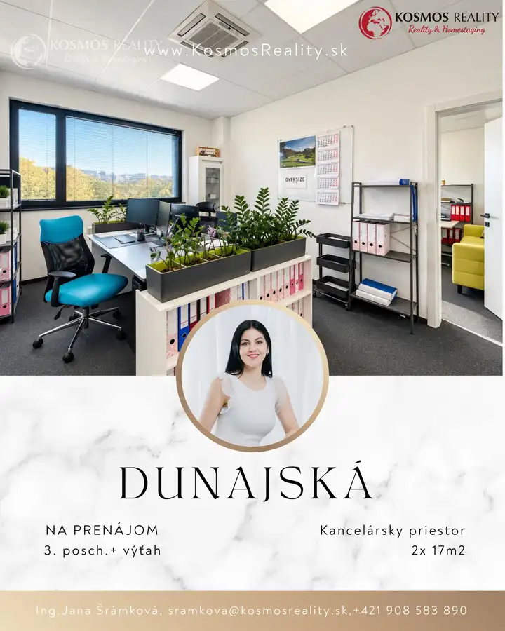
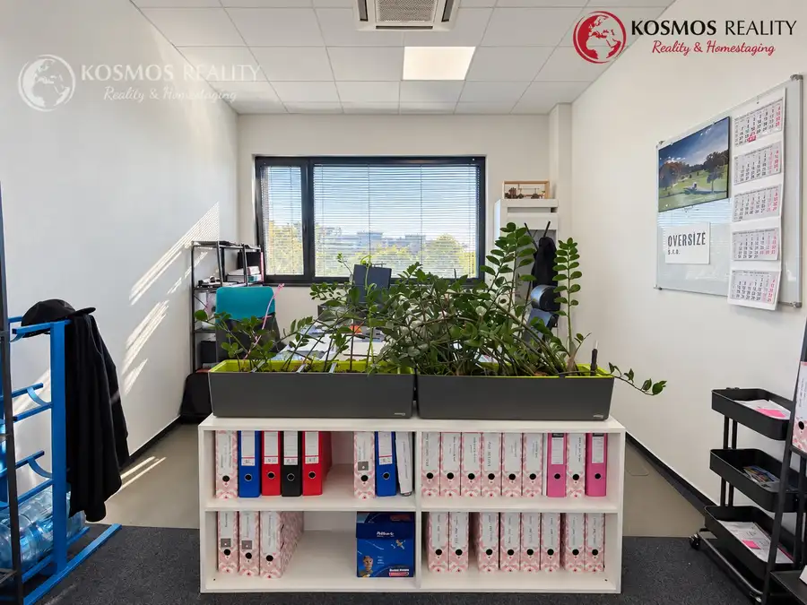
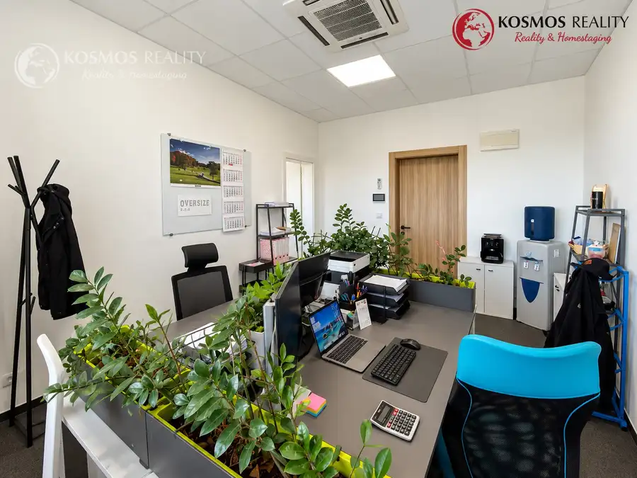
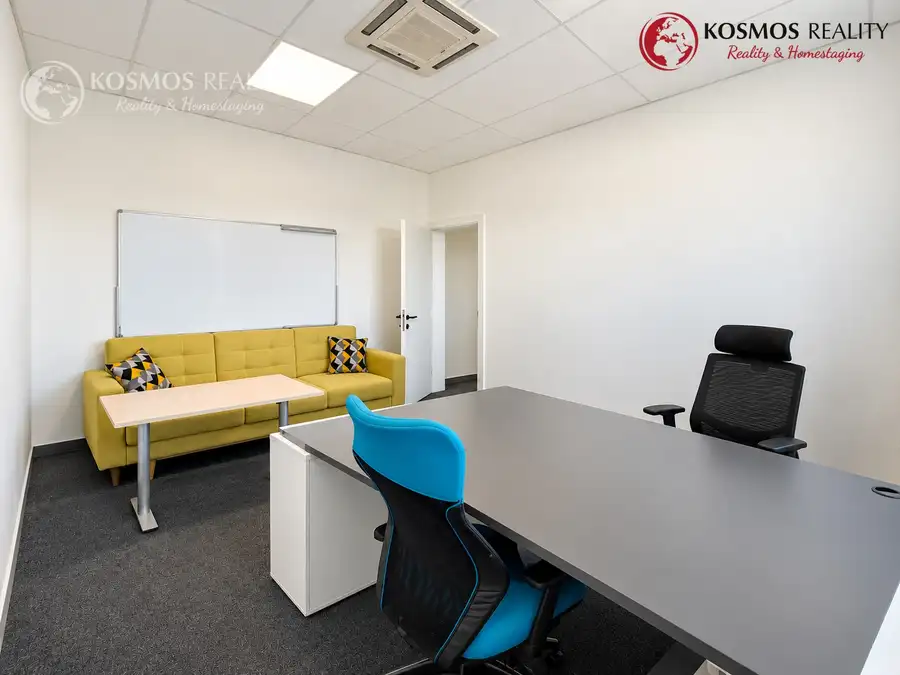
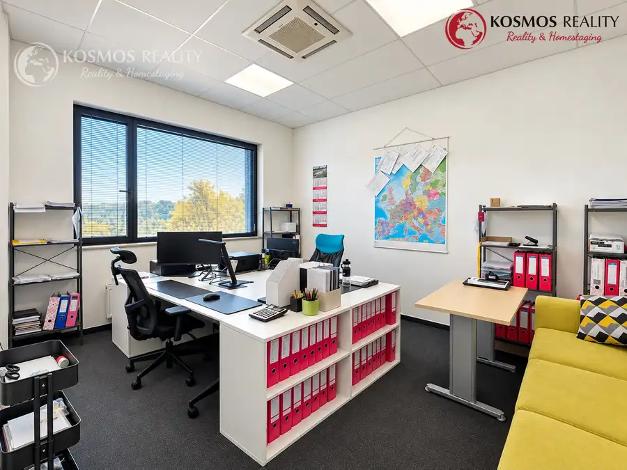
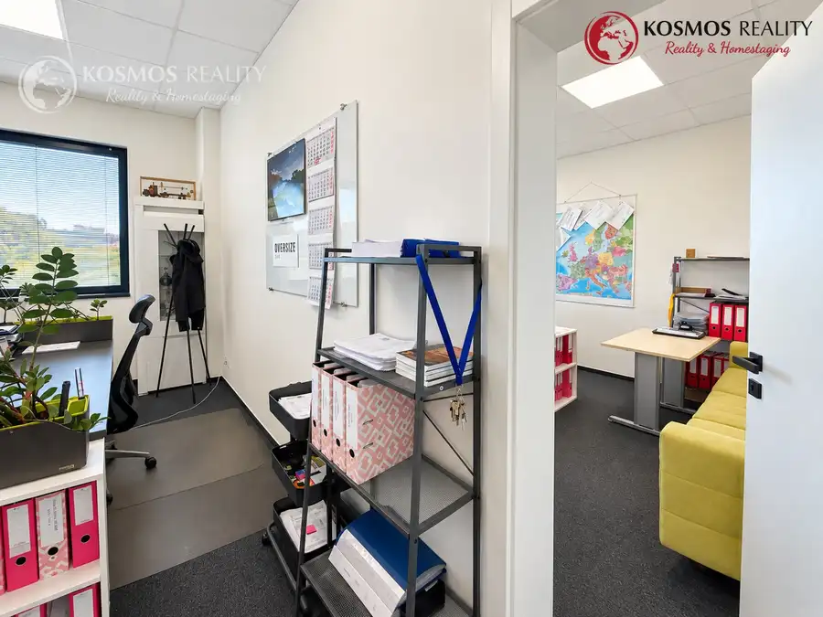
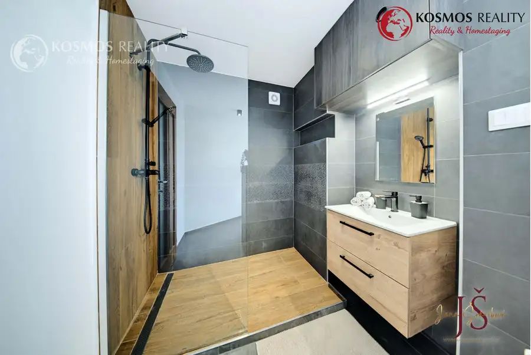
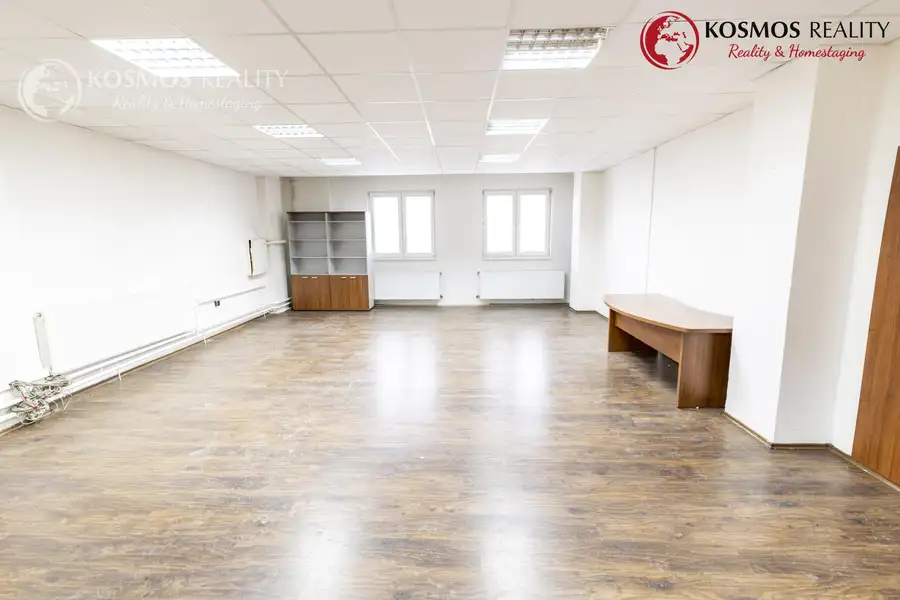
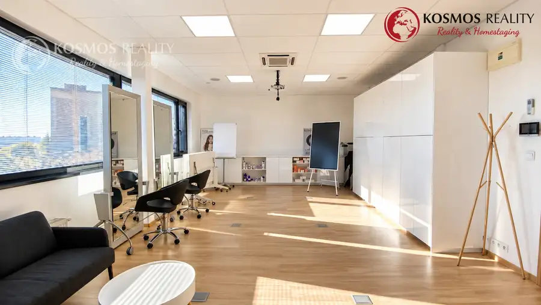

Reprezentatívny obchodný priestor, 35m2, Dunajská, Košice
Juh, Košice






- Plocha35 m²
- StavKompletná rekonštrukcia
- VlastníctvoFiremné
O nehnuteľnosti
Na prenájom klimatizovaný a reprezentatívny priestor pre Vaše úspešné podnikanie, nachádzajúci sa na ulici Dunajská v Košiciach, v podnikateľskej budove "Castor".Priestor je ihneď voľný od 1.12.2026. Obhliadky sú možné kedykoľvek po dohode.Ponúkaný priestor je rozdelený na dve priechodné kancelárie po 17,5m2. Prenajíma sa NEZARIADENÝ.Priestor má:- 2 stropné klimatizačné jednotky (chladenie aj kúrenie)- zavedenú optiku (náklady si rieši nájomca sám)- orientácia okien na východ- videokameru/ vrátnik- radiátory- systém otvárania kancelárie na kartu- administratívny vstup - automatické dvere Parkovanie:- voľné parkovacie miesta pre klientov budovy CASTOR- platené vyhradené rezidenčné parkovacie miesta v sume 99€ bez DPH pre 1 vozidloBudova:Reprezentatívna a kompletne zrekonštruovaná budova s celkovo 14 priestormi/kanceláriami s rozlohami 17-170m2. Vašimi "susedmi" sú podnikatelia v oblasti, gastronómie, reality, škôlka a iné. Upratovanie budovy, spoločných priestorov, toalety a vonkajšie okná je zabezpečené prenajímateľom a je v cene správy budovy.VÝHODOU je reštaurácia COCCO s barom na prízemí budovy, otvorená od PONDELKA do SOBOTY.V blízkosti: Centrum mesta, obchod Fresh, zastávka električky, bytový komplex Herberia..Cena:Cena prenájmu: 17 EUR/m2 bez DPH/mesiac x 35m2..........................595 EUR bez DPHCena energií: 3,51 EUR/m2/mesiac bez DPH x 35m2.............................122,85 EUR bez DPHCena správy: 3,15 EUR/m2/mesiac bez DPH x 35m2............................. 110,25 EUR bez DPHParkovacie miesto: 99 EUR/miesto/mesiac bez DPH na rezidenčnom parkovisku.- depozit je 3mesačný (dohoda možná)V prípade záujmu o obhliadku alebo viac informácii o predmetnej nehnuteľnosti nás kontaktujte na tel.č. 0908 583 890 , Ing. Jana Šrámková alebo e-mailom: sramkova@kosmosreality.sk-------------------Spoluprácou s nami získate:Exkluzívny prístup aj bez exkluzívnych zmlúvProfesionálne a férové jednanieOsobne nabrané ponukyKomplexné sprostredkovanie predaja/kúpy nehnuteľnostiŽiadne skryté odmenyAktualizácia ponúk a cienAktívne riešenie dopytujúcichNová služba HOMESTAGING – kosmosreality.sk/home-staging
Parametre
- Druh
- Kancelárie, administratívne priestory
- Dátum zverejnenia
- 04. 10. 2026
- Energetický certifikát budovy
- nie je
- Orientácia
- Východná
- Počet izieb / miestností
- 2
- Rok poslednej rekonštrukcie
- 2017
- Stav nehnuteľnosti
- Kompletná rekonštrukcia
- Telekomunikácie
- Optická sieť
- Typ
- Prenájom
- Vlastníctvo
- Firemné
- Vybavenie
- Verejné parkovanie, Výťah
- Vykurovanie
- Ústredné
- Úžitková plocha
- 35 m²
Kde to je


Mohlo by Vás zaujímať

BytNové 200 000 €REZERVOVANE 2izbový byt, 54m2, Pasteurova, Košice-Juh Juh, Košice 2-izbový54 m²3. podlažie
Komerčné priestoryNové Cena na vyžádáníKancelársky priestor s parkovaním, 73,5m2, Južná Trieda Juh, Košice 73 m²
Komerčné priestoryNové Cena na vyžádáníReprezentatívny priestor, 55m2, Dunajská, Košice Juh, Košice 55 m²